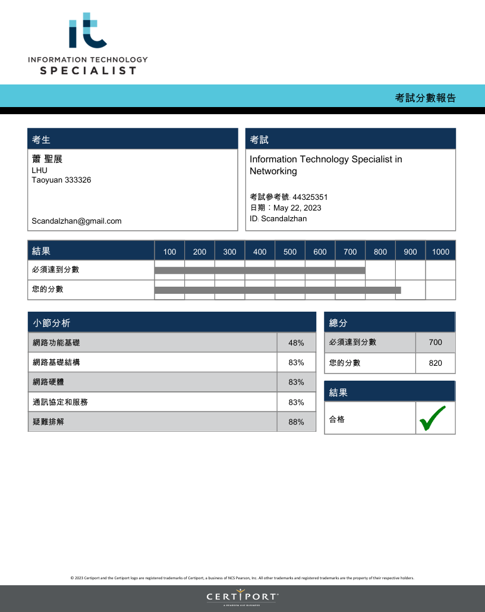
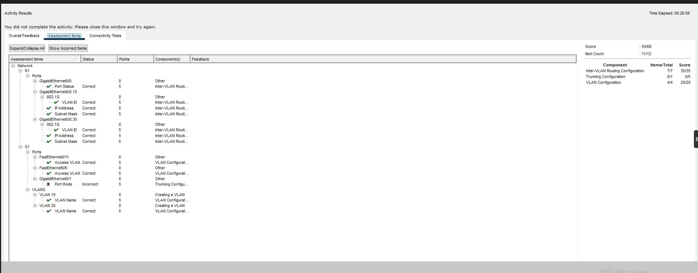
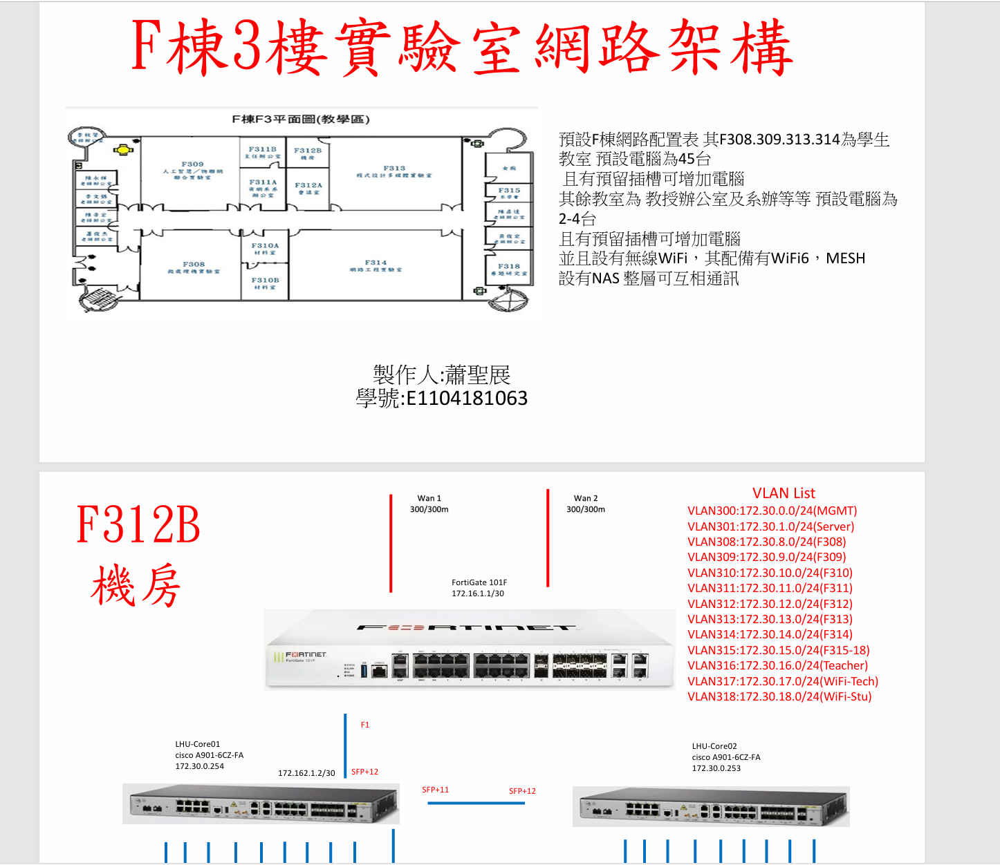

網路模擬工具
學習成果展示

透過考取 ITS 證照，我深入學習了資訊技術的核心知識，提升了專業技能，為未來進入科技產業打下堅實基礎。
在網路工程實習學習 Packet Tracer，讓我更了解網路流量分析與故障診斷，提升實務操作經驗。

練習單臂路由器設定，學會 VLAN 間的資料傳遞與故障排查，強化了網路配置的能力。

在校內課程中模擬建置路由器、伺服器與布線設計，提升了整體網路架構的實作理解與應用。
 在網路工程實習學習 Packet Tracer，讓我更了解網路流量分析與故障診斷，提升實務操作經驗。
在網路工程實習學習 Packet Tracer，讓我更了解網路流量分析與故障診斷，提升實務操作經驗。